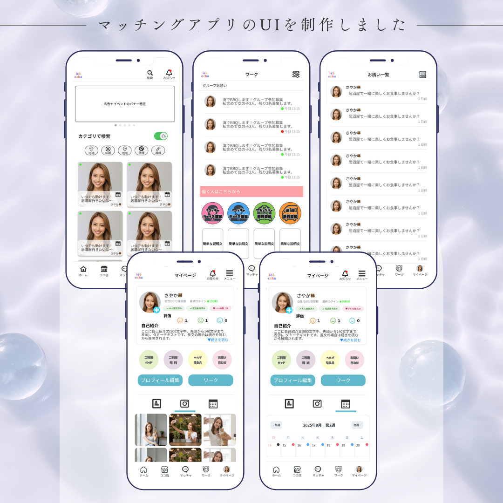

アプリUIデザイン
ユーザー同士のマッチングと、ユーザー×飲食店のマッチングという
2つの異なる利用シーンを想定したアプリUIを設計しました。
利用視点が変わっても操作感が分断されないよう、
UI構造や導線を統一し、初見でも直感的に操作が理解できることを重視しています。
UNI DESIGN
UI / LP / Web Design
ユーザー同士のマッチングと、ユーザー×飲食店のマッチングという
2つの異なる利用シーンを想定したアプリUIを設計しました。
利用視点が変わっても操作感が分断されないよう、
UI構造や導線を統一し、初見でも直感的に操作が理解できることを重視しています。
縦スクロールを前提とした情報設計で制作したLPビジュアルです。
スマートフォン閲覧が大多数であることを想定し、
必要な情報を瞬時に受け取れる視認性を意識しました。
悩みの提示から不満の解消、改善後の未来までを一連の流れで設計し、
最後は購入の後押しとなるCTAビジュアルで締めています。
ブランドイメージに合わせ、落ち着きと信頼感のある雰囲気を意識して制作しました。 公式HPとしての正しさや安心感が伝わる構成を重視しています。
FVで神社を前面に押し出し、神秘的な雰囲気を意識。 悩み提示から解決までを考慮した導線設計を行いました。
誰もが理解できるアイコンを用い、直感的に操作できるUIを設計。 作業効率にも配慮しています。
世界観が一目で伝わることを意識し、 情報量を整理したデザインにしています。
UI/UXデザインとWeb制作を中心に、情報設計からビジュアル、実装まで一貫して対応しています。
見た目の美しさだけでなく、初めて触れる人でも迷わず使えること、必要な情報が自然に目に入ることを大切にしています。
制作では、目的や課題を整理したうえで、ユーザー視点での導線設計や、運用・更新を見据えた構成を意識しています。
Tools / Tech
世界観や空気感を大切にしながら、丁寧に作りたい案件との相性が良いです。